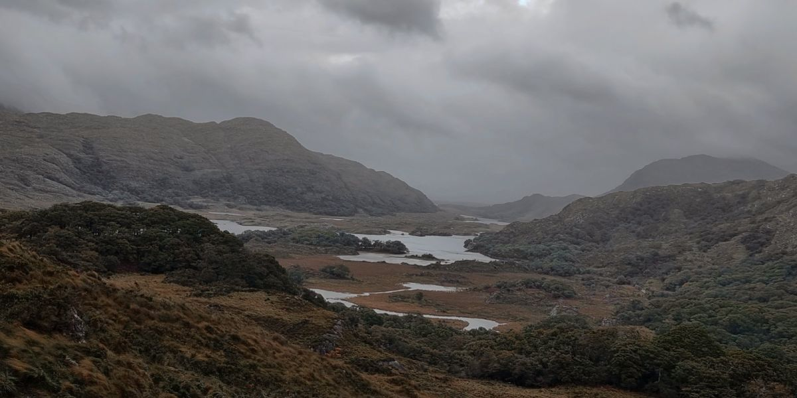
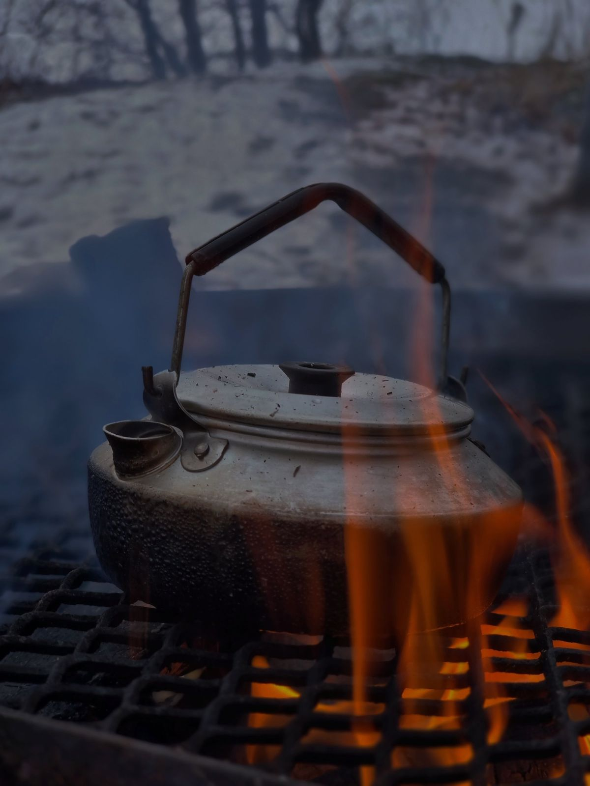
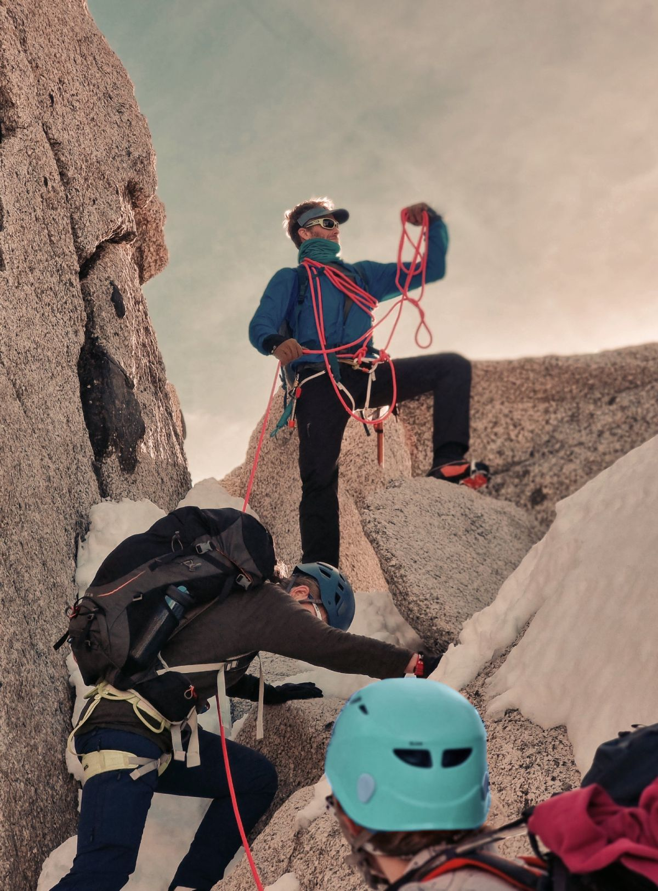

En bildserie om naturen.
Här kommer jag att presentera tre fotografier som jag har redigerat i Photopea. Bildserien har temat natur och friluftsliv. Jag har justerat färger och ljus, plockat bort ett oönskat objekt samt ändrat färgen på en klätterhjälm.


